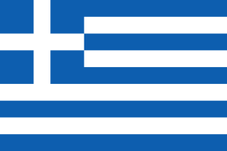

Greece
Greece debuted in season 2 by the hands of kingoftheclouds and has been switching participants until @hausofcy took over the country. The country is also very known for the constant appereances of Eleni Foureira, who remains as the only artist to be sent twice in a row (chosen by two different participants) and also holds the best result of the nation.
| Greece in the Globalvision Song Contest |
|  |
| Appearances |
13 |
| First appearance |
Season 2 |
| Main Results |
| Best result |
S153rd
hausofcy |
| Worst result |
S1223rd
hausofcy |
| Represented By |
|
Participations
| Season |
User |
Artist |
Song |
Language |
Position |
Points |
| S2 |
KingOfTheClouds |
Anna Vissi |
Call Me |
English |
14 |
41 |
| S3 |
Stefani Gaga |
Thomai Apergi |
One Last Kiss |
English |
9 |
59 |
| S4 |
DesertWolf |
Tamta |
Unloved |
English |
9 |
80 |
| S5 |
Bloody |
Eleni Foureira |
Μόνο Για Σένα (Mono Gia Sena) |
Greek |
10 |
73 |
| S6 |
hausofcy |
Eleni Foureira |
Το Κάτι Που Έχεις (To Káti Pou Écheis) |
Greek |
11 |
64 |
| S7 |
Marina Satti |
ΜΑΝΤΙΣΣΑ (Mantissa) |
Greek |
9 |
72 |
| S8 |
Tamta |
Αρχές Καλοκαιριού (Arhés Kalokeriou) |
Greek |
14 |
57 |
|
| S10 |
hausofcy |
Yianna Terzi |
Karma |
English |
19 |
41 |
| S11 |
Eleni Foureira |
Tómame |
Spanish, English |
5 |
139 |
| S12 |
Konstantinos Argiros |
Ξημερώματα (Ksimeromata) |
Greek |
23 |
92 |
| S13 |
Josephine |
Τι |
Greek |
10 |
168 |
| S14 |
Helena Paparizou |
Survivor |
English |
10 |
157 |
| S15 |
Ανδρομάχη (Andromachi) |
Να 'Σουν Ψέμα (Na Soun Psema) |
Greek |
3 |
218 |
Achievements
| Winner |
0 |
| 2nd place |
0 |
| Top 3 |
1 |
| Top 5 |
2 |
| Top 10 |
8 |
| Top 15 |
11 |
| Top20 |
12 |
| Last place |
0 |